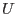
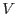
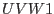
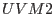
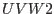
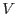
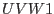
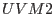
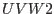

XMM-Newton Science Analysis System
ommag (ommag-3.11.1) [xmmsas_20170112_1337-16.0.0]
Description
This task converts the 'list' of given counts to instrumental magnitudes in the
appropriate instrumental bandpasses. The 'list' must be a source-list
from OMDETECT. The output file will be a FITS file identical to the input
source-list or time-series except that the count-rates have been
converted into instrumental magnitudes (in the specified filter
bandpass - ,  , , , , , clear) and the new
magnitudes written as an extra column in the source-list FITS file.
The program also calculates the limiting magnitude and writes the
value in the source-list file. Presently the computed magnitude error
is the maximum of the two asymmetric ones.
, , , , , clear) and the new
magnitudes written as an extra column in the source-list FITS file.
The program also calculates the limiting magnitude and writes the
value in the source-list file. Presently the computed magnitude error
is the maximum of the two asymmetric ones.
Please note that no magnitude is computed for corrected count-rates greater
than 1000- for such bright sources the count rate is wrong because it is out of
coincidence-loss correction. In these cases the magnitude will be set to Null and
the significance to the negative of its significance.
XMM-Newton SOC/SSC -- 2017-01-12